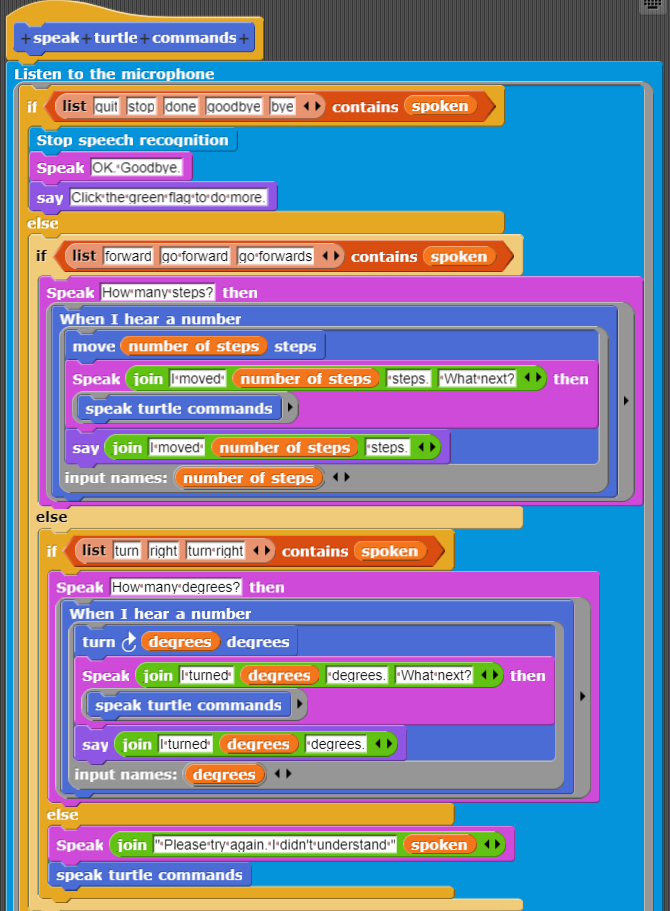

You can download the blocks presented here as a
project or
a library.
Browser compatibility
This guide includes many interactive elements that currently only run well in the Chrome browser.
This chapter relies upon there being a microphone connected to your computer.
(Note that when running Linux (e.g. on a Raspberry Pi)
one may need to configure the system or the browser to know how to access the microphone.)
There is a troubleshooting guide
that should be consulted if problems are encountered.
Introduction
It is much easier to get a computer to start with text and end up with speech
than to start with speech and end up with the corresponding text.
Typically, it is easier to get a computer to generate something than to recognise it.
Speech (and other sounds) cause vibrations in the air that cause vibrations in the computer's microphone.
These vibrations are converted to numbers.
Speech recognition begins with these numbers and attempts to determine what was said.
As you'll see the process is not perfect, mistakes occur.
A simple speech recognition block
Click on the following block, say something,
then click on the last thing heard variable.
If all is working well you should see what you just said.
Try saying something, look at the result, click on the block again, say something else, and look again.
If you want to try another language then use the set default language command.
When possible the system will use the language given if no explicit language or voice is given to more advanced listening commands.
There are many ways of specifying the language:
(1) use the language's name in English,
(2) use the language's name in the language, and
(3) give the language code followed by the dialect code.
E.g. en-GB for English as spoken in Great Britain.
Language codes should be one of the IETF language tags.
Google's Chrome browser supports over 100 languages.
If the language code and dialect code are the same you don't need to give both.
E.g., fr will be treated as fr-FR.
Speech recognition errors
Speech recognition can encounter errors such as the inability to access the microphone.
The most common "error" is when after several seconds nothing is heard.
The listen then ... block keeps listening until there is an error.
When the speech recogniser notices that nothing has been said then
the error block is given the text no-speech.
Other errors are audio-capture when the browser can't find a microphone and
not-allowed when permission to use the microphone hasn't been granted.
Try the following and then be quiet for a while.
A sample program using speech recognition (and synthesis)
The following program uses the listen then ... block to control a sprite.
You can tell it to go forward or to the turn right.
It will then ask you how much and then execute the command.
Say "goodbye" to quit the program.
Sometimes you need to repeat what you said.
Occasionally it will mishear you.
There is a
full screen version of this.
This program supports many ways of saying the same command word or phrase.
A different program expects the user to say full sentences
and looks for numbers and the command words ('forward' and 'right') to respond.
This version seems much more intelligent, but is it?
A similar program could be written to control a physical device such as a robot or a set of lights.
Exercise.
See if you can add a "turn left" command to the program.
What else might be fun to try?
Hint: how about changing size, looks, colour, or more?
How about doing animations in response to spoken commands?
How the spoken command program works
If you click on you'll see the blocks behind the program.
If you then right click on speak turtle commands
and select 'edit' you'll see the following program.

The blocks that implement the speech command program
Click to read an advanced topic
The spoken variable contains what was just recognised.
The nested if-then-else commands test first for speech for exiting the program,
then for forward movement, and then turning commands.
If none match, then a 'not understood' response is created.
Both the turning and moving commands cause the program to ask for an amount to turn or move.
When a number is spoken the turtle then turns or moves appropriately.
An alternative way to do the same thing
Click to read another advanced topic
The command program relies upon what computer scientists call
'continuations'.
These are blocks of code that are executed when something happens, in this case when the speech is recognised.
An alternative that is popular among Scratch programmers is to rely instead upon broadcasting messages.
The following implements voice commands by using a helper command called
Broadcast speech recognition results and ....
It broadcasts the message heard something.
The program fragments that listen for heard something broadcasts need to know what was heard.
The variable last thing heard is used for this.
(It also broadcasts speech recognition errors and sets the
speech recognition error if they occur.)
This style of programming is perhaps easier for young children but it does have its limitations.
For example, it is very difficult to implement a response when
no other parts of the program understand what was said.
The first version responds by saying it didn't understand what was said, repeats what it thinks it heard,
and says to try again.
The broadcast version
cannot do so.
An example project involving generating sentences using parts of speech concepts
The following sentence generating program starts with a random sentence "template".
The program considers any word starting with "?" to be a variable that is replaced by asking the user for something of that sort.
For example,
The silly ?PLURAL-NOUN like ?ADJECTIVE bananas.
will cause the program to first ask the user for a
"plural noun"
and then ask for an "adjective".
If the user answers "potatoes"
and "gigantic" then the program says
The silly potatoes like gigantic bananas.
If you click on you'll see the blocks behind the program.
Let's look at the code to see how it works.
Screenshot of the core of the program that asks for substitutions for words beginning with "?"
This part of the program goes through the sentence word by word pausing when a word or phrase starts with a "?".
It pauses after asking for a substitution and
then calls the Broadcast speech recognition results ... command.
The following code responds when something has been heard and interpreted:
Screenshot of the part of the program that responds to recognised words or phrases
It repeats what was heard and substitutes it into the list of words replacing the word starting with "?".
This example illustrates how to use speech synthesis and recognition to produce an application that is purely verbal.
It is also an example of a program that crosses discipline boundaries.
To generate grammatically correct (though often nonsense or silly) sentences one needs to reply upon grammatical concepts
such as nouns, noun phrases, verbs, adjectives, and adverbs.
Issues about number agreement and tenses arise naturally.
Could a program like this work without grammatical ideas like nouns, verbs, adjectives, etc.?
A more sophisticated sentence (or story) generator
This following program extends the sentence generator by adding a new feature.
If it encounters a word beginning with "=" it replaces it with the last response to the request
for an example of that word/phrase.
For example, consider this very short story:
This is a story about ?GIRLS-NAME.
=GIRLS-NAME is ?ADJECTIVE and very ?ADJECTIVE.
She travelled to ?PLACE-NAME. There she met ?BOYS-NAME who was a ?OCCUPATION in =PLACE-NAME.
=GIRLS-NAME and =BOYS-NAME lived ?ADVERB ever after.
If the responses were
"Juliet",
"warm",
"beautiful",
"Verona",
"Romeo",
"amateur poet", and
"barely"
then the generated story is:
This is a story about Juliet.
Juliet is warm and very beautiful.
She travelled to Verona. There she met Romeo who was a amateur poet in Verona.
Juliet and Romeo lived barely ever after.
You may want to enhance the program to turn
"a amateur"
into "an amateur".
Try changing to have a different template story.
If you click on you'll see the blocks behind the program.
A question answering demo
The following demo is a bit like Alexa, Cortana, and Google Assistant.
It asks the user to say something and then sends those words off to Wikipedia.
Typically, there are many matches so it picks one at random and says it.
Screen shot of the entire 'Ask Wikipedia' program
A weather service demo
The following demo is another one that is like Alexa, Cortana, and Google Assistant.
It waits for the user to say a sentence containing a place name and words such as 'wind', 'forecast', or 'atmosphere'.
It guesses that any words that are capitalised make up the place name, like "New York City".
Yahoo! weather service
is then contacted and the response is spoken and displayed.
The weather program can be enhanced in many ways. Try it.
Speech recognition can be used to transcribe spoken speech.
Those unable to type or write can use it to communicate textually and to generate notes and reports.
There are many specialised contexts where it can be very useful.
For example,
doctors can produce transcripts of their conversations with patients, thereby improving the patient's records.
Automatic transcription can enable textual searches within videos.
It can be used to generate captions for videos.
Combined with translation, speech recognition can provide input to translation services
and its output can be converted to speech in another language.
Another use of speech recognition is as an interface to computers or digital artefacts.
An application or a robot can be constructed that takes verbal commands.
This is particularly empowering for people with disabilities who can't themselves perform those tasks.
Assistants like Siri or Alexa can provide helpful responses to spoken queries.
Verbal input and output can be the safest way to communicate in some circumstances such as when driving or piloting.
What are the dangers of speech recognition?
Like many technologies speech recognition can be misused.
It could be used for widespread spying on a population.
It could be part of the basis for replacing human interactions with call-centre help services with computers
that lack the kind of understanding and empathy that people can provide.
By reducing drastically the cost of telemarketing calls by automating them they can become a more frequent annoyance.
The use of companion robots to
provide social support is controversial since again the robots may lack understanding and empathy.
Speech technology has become part of
interactive toys and children become too emotionally attached to them.
The benefits and dangers of speech technology could be good topic for student discussions.
Do you think the benefits outweigh the dangers?
Is there a way the dangers can be avoided?
How does speech recognition work?
It begins with the microphone that converts vibrations in the air (i.e. sounds) to numbers
(using something called an analog-to-digital converter).
The digitised sound is broken into short segments (hundredths or thousandths of a second long)
and fed into a recognition engine.
Today the best ones rely upon
neural nets.
Complex statistical programs are also often used.
There are many challenges including the wide range of voices, dialects, and accents
that a speech recognition engine may encounter.
There is often background noise that needs to be removed from the signal.
Other challenges come from the complexity of human languages.
There are many words that are homonyms,
different words that sound the same.
Separating speech into separate words is difficult.
A classic example is how "recognise speech"
sounds a lot like
"wreck a nice beach".
As one uses the blocks and sample programs of this chapter one will often encounter errors.
These are sometimes amusing, especially when it leads the program to do something silly.
For applications where computer mistakes can cause serious problems one can build the interface so it asks confirmation before proceeding.
It is interesting to compare speech recognition errors to the kind and frequency of the errors that humans make when listening to speech.
Exercise.
Find a list of things that people mishear or use the examples in
this article about lyrics that people misunderstand.
See how well the listen block does when saying these examples.
Does the system make the same kinds of mistakes people do?
What can one say about a speech recogniser if it makes the same mistakes as people?
What if its mistakes are different?
Ideas for projects using speech synthesis and recognition
Here are some ideas for projects using speech recognition
(and sometimes also use speech synthesis as described in
Chapter 1).
A robot that responds to commands such as "forward", "left", "right", and "stop".
A chatbot that can (pretend to) talk about a particular subject.
Chatbots have a history going back over fifty years
but it is only recently that speech can replace typing as the way to communicate with a chatbot.
Another example of a textual program that can be reconceived as a verbal program
are adventure games.
A virtual world is simulated where one can navigate by saying things like "walk north" or "open door"
and hearing responses such as
"you now see a castle in the distance" and "the door is locked".
This can result in a computer game that blind people can play
(or drivers can play without taking their eyes off the road).
Guessing games such as "guess what number I'm thinking of".
The computer can either pick a number and respond to guesses with "warmer" or "colder".
Or the computer can guess numbers and listen for the words "warmer" or "colder" to decide what to guess next.
Telling or responding to knock knock jokes.
An interactive artwork that responds differently depending upon if it hears is something positive or negative.
It could do so by searching for key words and phrases in what it hears or
it could connect to a sentiment analysis service.
Putting together two speech apps so they interact.
For example, the part-of-speech sample program described earlier could be paired with a program that searches for keywords such as
"noun", "verb", etc. and then responds with a random entry in the corresponding list.
This could be even more exciting if the two apps were placed into some physical devices that "converse".
And thousands of other things.
A full-featured speech recognition block
The speech recognition engines typically can do more than
the basic listen then ... block described above.
One can specify which language is expected.
The engine can report interim results and alternative results.
It can provide 'confidence' values indicating how certain it is that it recognised the speech correctly.
All of these functionalities are provided by this block:
The arguments to this block are (any of them can be left blank):
The first argument are blocks that receive interim results as they are produced.
The next argument are blocks that receive the final result.
The next argument receives errors if there are any.
Text that indicates the language followed by the dialect.
E.g. en-GB for English as spoken in Great Britain.
It should be one of the IETF language tags.
Google's Chrome browser supports over 100 languages.
The maximum number of alternative recognition results.
If not provided it is 1. Note the recognition engine may return fewer results.
Blocks that receive a list of alternative results.
Blocks that receive a list of confidence numbers corresponding to the alternative results.
0 means no confidence while 1 is the highest confidence.
Note that for Google's speech recognition engine currently only the first alternative has a non-zero confidence.
Watching the interim results can provide some insight into the process of recognition.
You can test this using the above block where you put the say
block with an empty text field in the first argument.
(Snap! interprets an empty field in this context as the input to the blocks (in this case the current interim result).)
For example, if you say "red"
you'll see "red"
but if you soon afterwards say "a book"
you'll see "red" become
"read a book".
You can see the same phenomenon at this Google demo.
There is much one can explore with the 'language' option.
For example, if one selects 'fr-FR' (French as spoken in France) and then says
"une deux trois quatre five six"
the result is "1 2 3 4 5 6".
Notice that it recognises both French and English.
(English is probably used because it the operating system language setting on my computer --
if your computer is configured with another language it probably will be the default.)
Strangely if with English you say "one two three four five six"
you get those words,
not the digits one sees with the French setting.
Exercise.
Explore how well the system recognises numbers in different languages.
You can use Google Translate to learn how to say
numbers in languages you don't know.
Try fractions and negative numbers.
Try very big numbers.
Additional resources
This documentation of speech recognition
is a very complete description of speech recognition features browsers should support.
(Chrome currently is the only one but other browser developers are working on it.)
How stuff works
has a clear explanation of how speech recognition systems work and what the challenges are.
(Though it is a bit dated.)
 you'll see the blocks behind the program.
If you then right click on speak turtle commands
and select 'edit' you'll see the following program.
you'll see the blocks behind the program.
If you then right click on speak turtle commands
and select 'edit' you'll see the following program.